前言：發現和野鳥作「諮商式互動」是相互尊重、進行溝通、建立良好和諧關係 基礎的行為模式之一。拍攝野鳥不一定要躲在偽裝帳內，從野鳥對人的明確而簡潔的動作中很容易理解行為的意義，降低對人的刻板印象的態度，進而接納人，當對人不理不睬的時刻，便是攝影為所欲為的開始。
有一隻高蹺鴴，七、八隻洋燕和幾百隻的麻雀，在自由意志下，沒有原因、沒有壓力地向著我飛。另有一對白頭翁、四隻高蹺鴴和兩對東方鴴的窩，和牠們以諮商式互動後，讓我用廣角拍牠們的孵蛋過程，且彼此自在。
孩童階段，寒舍養過雞、鴨、鵝、貓、狗、兔、羊等動物，看過雞孵蛋，鵝吃草，鴨抓泥鰍，羊帶小孩……。當時不讀書，終日只想帶牠們過日子，等待鴨子生蛋前的呼喚，接生後，生食鴨蛋，也給予鴨食；鵝背上經常放著英文課本，令我終生不會遺憾英文不好。小動物們的兩性關係、親子關係，足以含蓋日後所有知、情、意的學習。
三十年前，進入鳥會，喜歡拍鳥，被灌輸不要干擾野鳥，拍照要用偽裝等等，服膺了二十多年，不敢違背，而一向以為人類可以成為野鳥的父母，也可以是朋友的理念，在這幾年才真正開始實踐，除了無法投緣的對象外，似乎都有預期而理想的互動成果。人鳥共同認知的語言，是互動溝通的開始。例：狗打哈欠，主人可理解，當主人打哈欠，狗能認知，共同語言有了基礎。刺激、反應變項的有效聯結，是相互學習的成果。人、鳥各別的行為模式，是互信的第一步。（互信包括知道對方將有的舉止和動作代表的意義。）
人鳥間用「諮商式互動」，一切泛道德的「干擾說」則無用武之地。其實，野鳥除了天敵和無謂的干預，會有情緒行為上的困擾外，一切外界刺激當「自然現象」看待，人的介入，只是角色問題，是友是敵，端看「現象」決定。故：「以互動為前提的干擾是互動，以干擾為前提的互動是干擾。」是互動或是干擾，或由野鳥對人的適應，優於人類對野鳥的適應便知。
野鳥行為單純而誠懇，目的和方向明確，即使欺敵和誘敵也適可而止。因此，想要和野鳥建立關係，尤其是和諧的關係，或許比敵我關係，在難度上，容易得多。如今拍鳥用偽帳者，以為野鳥總在另一個無關痛癢的空間似的，事實上，牠們總是對帳蓬充滿不尋常的好奇和警戒。拍鳥者也常用食物作拍照手段，野鳥充其量是對食物作趨避方式選擇罷了，根本不會做出自發性覓食的自由自在表情，照出來的照片，百人千篇一律。反觀人像攝影，力求攝影和模特兒之間能有和諧互動的價值表現，何以拍攝野鳥要將「人」的因素當客體看待？甚至拒絕「干擾」，不准「互動」。本人以為唯有互動，而且是和諧美感的互動建立之後，才能拍出作者個別差異的風格作品。
拍野鳥，不以食物作原始增強物，較容易拍出洐生性意義畫面，近乎作品的價值。和諧互動下的野鳥表情、眼睛的神韻和動作情緒是一致的。神經和肌肉的鬆馳，有助於美感的表現。拍者及相機，是「存在的不存在物」，不影響野鳥行為的自主性。閃灯是野鳥不需反應的刺激物，快門聲是不可避免但可選擇的反應對象。以和諧互動為前提，一切聲光刺激反應都在人鳥感情的交流下，溶於共同創作作品的情懷之中。
二十年前，拍「洋燕向我飛」，有七、八隻繞圈覓食的洋燕，不介意本人存在似的，牠飛牠的，我拍我的，當然是偽裝下的遠拍，日子久了，才一步步解除偽裝，當牠們全然不在意本人存在時，攝影觀念，也由300mm鏡頭改用180mm鏡頭，焦點則由9m近到4.5m左右，飛羽表現，明顯地由客觀情境下的對稱式展翅，變成有高有低多端變化的飛姿，當羽翅轉向（不轉會撞到相機），身體仍直向我飛的刹那，正是夢寐以求的動作畫面。有觸覺感的互動，都在4.5m處發生。牠們不在乎我的原因，完全只是因為在牠們的棲地「不隨便亂動」。每當牠們獲得食物（小火車掉下的甘蔗，引來蠅蟲）之同時，看到我在旁邊，知覺接近性的多次交替出現，進食的高興類化到我與洋燕的關係，必然是和諧的快樂感。四千次向我飛的經驗中，至少有兩次那隻洋燕呼伴看我照相，並以聲示意。每次進入其棲地，在牠們互相交談後，飛向我的過程中，都有兩聲呼應，或在快門聲前，或在快門聲後，即使不按快門，耳邊也出現兩聲呢喃。相處兩個月，適逢攝影剛有心得時，地形地物改變，曲終人散，至今情景不再，觸景傷情的機會都沒有。
野鳥怕人，會離開人，犧牲食物、孵蛋和帶孩子，也在所不惜。若野鳥不怕人，則人鳥不相干，各過各的。若牠們學會人怕野鳥，便不怕人，耀武揚威的情緒可能展現在人面前，是一種和人接近的學習方式。因此，拍出了一系列「高蹺鴴向我飛」的過程。當年，入其棲地，見其羣起示威便有意讓牠們學習到「人怕高蹺鴴」。擇一特別兇狠的作為對象，用心理學的「操作交替」理論，每當牠在空中俯衝示威，典型的飛行模式在10m距離位置發生時，本來由默默地望著牠急轉背向抱頭蹲下，以示害怕，作躲避狀。10m是預期拍攝距離，只要牠飛行模式不變，按下快門再作害怕狀還來得及。果然，在特定的行為互動模式下，大概經過數十次、上百次互動行為的交替，牠知覺到「人怕牠」，之後，牠愈飛愈靠近我，愈表現威猛姿態，本來用300mm鏡頭，攝距10m的情境，可以改用50mm鏡頭，2m的近拍，2m是牠必需轉向的最近距離，否則會撞到我，2m也是最精彩，最高亢的飛姿表情（羽翅和地平綫垂直）。能盡情拍照的因素，是牠學會人怕牠而已。這時候，其雄威不只出現在棲地上，而是飛過三、四塊鹽田找我發威，後來才發現，牠「攻擊」我，不是趕走這個人，而是建立牠在該族羣中的社會地位。相處一個半月，颱風後失聯。
羣體的一致性行為能表現「數大為美」的氣氛。常見的麻雀，特定情境下，理解其羣體的社會行為，一定會有特定行為出現。二、三月份，雀羣常在田間活動，在牠們的習慣性行為裏，找尋可能的特定畫面的拍攝地點是攝影者的基本智能。羣雀在習慣的環境中，多了攝影者，飛行行為及模式也會改變，重新適應，當牠們對攝影者角色不以為然，如同不存在時，其飛行模式則趨於整齊而且一致。老早就響往拍出羣雀向我飛的畫面，終於在和牠們「默默互動」中完成了數張堪稱作品的照片。80~200mm鏡頭，距離8m，迎面平行羣飛的麻雀，照片上容易造成向畫面兩邊外飛的錯覺，故前提必需左邊的向右飛，右邊的向左飛，中間的向前飛才行，同時，也得後方者先飛，前方者後飛，才能在景深範圍內，獲得適當清楚。鳥與鳥的重疊與否，是另一種要求。
早年不懂事，以為趕走羣鳥即可拍出好照片，事實上，只有自動自發的鳥兒表情最可人意，向著鏡頭或拍照者飛行，除了呼喚外，祇有靜待其羣飛路線的出現。和牠們作一個月緊密相處後，食物漸少，大團體也解散為小聚落。留下的是對畫面的回味和反思：團體照是186隻美？還是212隻美呢？
人鳥雙方互動的行為不可能一蹴可幾，誠懇地接納對方，彼此溝通（我意牠知，牠意我也知）方可持續。主角或許是拍照者，但野鳥不可能是配角。在互相尊重的前提下（人尊重鳥，要做到不侵犯其自主權；鳥尊重人，一定不故意錯覺人意），主動或被動的行為表現，必在互換主、配角的情境中，共同磋商出當階段的主、客角色。角色的行為動機可能互異，誘因及目的，也不一樣，然而，互動行為背後的真誠，是人、鳥間必需同時具備，戲才能合唱下去，否則，若野鳥三不五時重複作擬傷和誘敵狀，攝影者不擇手段急於拍照，無疑是各吹一把號，這已是干擾。動作和動作行為的意義，成為彼此認知的模式之後，便是溝通的開始，雙方互動中，各取所需，各顯神通。和高蹺鴴的窩主零距離的手喙接觸；在東方鴴前方35cm的廣角拍照，共同建立關係，共同創造作品的經驗，終生不忘。
人鳥溝通最大困擾是野鳥對人的刻板印象，特定物理距離範圍即引起牠們的逃避和警戒。「我不是一般人，不要把我當人看，不要理我」是當初對牠們最佳態度的期待。後來，也發現這種觀念不正確，原因很簡單：「否定作用」是不適應的自我防衛機轉行為。事實上，明確地讓牠知道我就是我，牠們分化的知覺能力會很快進入認知的，家禽家畜不就是這樣和人建立特定關係的嗎？先前說明野鳥行為單純而誠懇，與人接近與否，不在刻板印象，而在人的行為態度。人的態度適合以軀體動作表現為主，即可進入互相溝通的領域中，動作表現之動機和意圖明示在牠面前，一致性有信度的大動作，手腳移動的方向、速度、次序、幅度，在開始的互動中，扮演重要角色；每天的服飾和髮型、顏色和款式力求一致，拜訪野鳥的時間最好也一樣，能在遠距離放些讓牠心理準備的訊息，更容易進入溝通狀態。該做的做了，和人際溝通一樣，有八字不合的，敬而遠之。溝通過程，可以簡單的使用刺激、反應的基本理論，進而進入多層交替的學習。在和諧互動的「拉踞戰」當中，野鳥有豐富的表情和動作（不是敵意的，而是好奇和新鮮的），是攝影的關鍵時機，當牠完全信任攝影者時，窩主出入巢穴如入無人之境，對攝影言，不一定是好事情。不過，此時此刻的攝影慾求早已被互動的情感價值所取代。「偷」或「搶」的畫面，無和諧美可言，互動（主動及被動）的成就感必大於塑造畫面的成就。
和野鳥建立良好的和諧關係是漸次塑造的（shaping）。彼此行為每靠近一步，都是良好互動因子，在細節上堆砌而成的。人鳥相互的刺激反應過程中，在多次增強和消弱的連續不斷的進級和淘汰抉擇下，互信（互相確信對方的恰當和不當行為）增強，進入「再保証」境地，方尋得良好互動的因子，依此模式，去蕪存菁，由彼此接近的心理距離，進展到物理距離的實質造詣，指日可待。
東方鴴和高蹺鴴的窩，對窩主言有最強烈的誘因去孵蛋，窩主對蛋的驅力表現，係相對於人的行為是干擾，抑是互動？人鳥起始的發展關係至為重要，可由「沒有關係」shaping到「有關係」後，可能是好的關係，可能是壞的關係，野鳥行為動機的滿足程度對個體的損益，決定人鳥間關係的前進或後退的權衡。人們對「諮商式互動」的認知有助於關係的適當發展。互動中，攝影者能提供野鳥高滿足程度的時機，拍照的好機會才能向前一步，野鳥必需及時知覺攝影者提供的「時機」，牠才可能提供回饋攝影者前進一步的線索。前進的「時機」和野鳥對該刺激反應行為是在同一序列上，方有意義。人鳥間相互進退關係成為簡單模式之後，二者均有自然趁機靠近的環境，是有情、是無意，都可視為自然，不會發生敵我意識。牠們的孵蛋頻率和時間及其對攝影者的注意頻率和時間的長短，呈正比或反比，是回饋關係建立的好壞指標。關係愈好，攝影者動作的刺激屬性，愈不能引起野鳥的反應，當刺激繼續，其反應不變，攝影者便可為所欲為地拍照。
鳥對相機互動和對人互動，可以分開運作，基本上先以相機靠近，或由10m為起點，進而9、8、7、6…..2、1m的接近，距鳥愈近，每次前進距離要愈短，停留時間要愈長。由10m開始，按空快門，漸次使其適應（適應是說任何情況下，快門聲不足以使其做任何反應），即可再進一步。人與鳥互動，可依當時情境，隨機應變。基本上，只要牠前進，攝影者後退，此交替現象，力求在野鳥知覺到攝影者後退和牠前進發生直接相關的原則下，行為即發生意義，攝影者一定要有能力在野鳥前進行為發生後，最好在1/2秒內，做出後退動作，才能使前進、後退成為刺激反應的有效聯結。以此模式出發，起先由進少退多、進慢退快，漸發展成進多退少、進快退慢，人鳥關係即漸形靠近。一定的相距尺寸後，攝影者必需壓低身體高度，才方便靠近野鳥，用爬用滾好自為之，行動原則亦需簡潔、明確、易懂，野鳥芳心近在咫尺之時，便可自在攝影，百張、千張快門如行雲流水。若反思「偷」「搶」式的對著受威脅的野鳥拍照，則有如落花有意、流水無情，按快門頂多兩三張，必需作罷。
值得一提的是，人的時間感和野鳥的時間感略有不同，大體言，心臟跳動速率快慢的個體和時間「膨漲」感的大小成正比。也就是說同一物理時間，心臟跳得較快的野鳥，時間過得慢些。這是說，野鳥今天的學習，是否能記憶到明天，不是用人的想法去認知。又，東方鴴的孵蛋，同一對夫妻，有二十分鐘、四十分鐘、也有超過六十分鐘才換一次班的，完全依照太陽當時照射的強弱程度而定。公母換班的動作程序、姿勢表情，公母有別，信度卻很高。為了攝影必需打擾牠的話，以二十分鐘換班為例，野鳥的時間觀念和拍照時機的投契，是件重要大事。簡單說，在孵蛋十五分鐘以內打擾牠，其離巢一兩分鐘內即回巢是自然的事。若在第十七、八分鐘釀成牠因故離巢時，隨即換班，也算正常現象，若原隻回巢繼續孵蛋，無疑已構成干擾，人鳥關係發展亮了黃燈。最終權衡打擾，但不構成干擾的時機，要用野鳥的時間觀念作觀察起點。當每天拜望野鳥的同時，牠是否能知覺為同一人之前，最好對牠做個「心理測驗」，再進行下一步驟的互動課程。
人鳥互動，最怕刺激反應的錯誤聯結，即「迷信交替」。例：一方的手部的示意動作，另一方卻認為是腳部的表情含義，並以腳部表情，當作學習內容體會。對人言，迷信交替是誤會的起源，對鳥言則得不到恰當學習，人鳥互動便有障礙。一方發覺不對勁後，重新澄清溝通步驟，令對方正確覺察，是唯一方法。通常，溝通責任在人不在鳥，因鳥兒行為的一致性信度高，人則不知覺地投射出不利於溝通的訊息。用不同管道的溝通方式，也是一種可行之道。人鳥雙方真誠接納和瞭解的態度有助於溝通，溝通是人鳥間建立良好關係的鑰匙。
我對鳥示意，以大動作為主，動作方式力求一個意思一個動作，重複而簡潔的同一速率的動作，數次後牠們便可明白地學習，進而選擇其反應態度。和鳥相距三公尺以內，需極緩慢的移動趴在地上的軀體，隨時注意野鳥頭的表情含義，決定自己的臉部方向，待四眼相對之時，便知是友是敵，「友」則進，「敵」則將頭叩在地上，匍匐向後，適可而止，再求其次。和高蹺鴴相距50cm時，相機的移動、手臂的晃動，對牠言，不能構成威脅感的情緒之後，對我言，則再也拍不到牠左看看、右看看的表情了。
互動過程上的成敗，事實上，不只是用科學詮釋的，非科學因素更多，何況S(刺激)－O(個體)－R(反應)：刺激反應間有個體變項的因素的差異性。「如人飲水，冷暖自知」，可能是詮釋的終結。Interaction(互動)和interruption(干擾)最終不離inter－，張三知覺為互動，李四可能知覺為干擾。雙方對互動或干擾的感受絕非旁觀者的預設知覺立場所能體會的，互動和干擾的定義，也不是由個人或群體意識及潮流所訂定的。無庸置疑的，究竟和諧關係可見真章。和諧的終極意義應是「主、客體能在互動中滿足各別動機後，各自實現自我，產生共同喜感的成就行為」。
不論心理的或物理的距離，野鳥和人有不同的認知差異，以尊重的態度體會對方，有助於理解上的突破。本人也曾失誤，簡言之，東方鴴孵蛋，快門遙控放置相機，由10m開始靠近（互動過程在此不論），9m、8m、7m….1m，牠倆都接納了相機（所謂接納，本人認為是相機的空間位置和發生的光、聲現象，不影響野鳥的自由意志行為），當相機再向前靠到50cm時，牠倆緊張了，於是再退到1m，退到2m，牠們還會緊張，知道錯了，離開現場，回家反省。當時不解的是為何前進到1m，牠們不怕，卻在退到2m處仍有緊張感？後來，由另一窩的東方鴴經驗中得到：相機前進到2m時，得開始作「感情」的互動，例：牠在5m左右叫我離遠些的同時，提供前述「時機」的空間，牠對人感受到特定模式的情感作用後，便不在意相機了，最後，相機放在窩前35cm處，任我拍照，快門聲居然不是干擾線索，此時此刻，人鳥均不知干擾為何物，和諧互動油然而生，沛然而起。
同理，也以同一模式和高蹺鴴互動，激進的拍攝情緒是危險的、是得不到牠們認可的。向牠們致歉的下場是四天內在地上的滾和爬，磨破了三件長褲。不過，最後被允許在距牠50cm處盡情拍照是最快樂的事。令人感動的是：雛鳥離巢（公鳥喚）約1.5m時，母鳥喚回巢內，那時，我趴在巢邊50cm處體會牠們的親子關係。
小插曲兩樁：魯莽的在窩前放置相機同時，也取物為蛋遮涼，幾次後，東方鴴似乎由好奇變成感謝的表情，在五、六公尺外，昂頭探望並輕輕呼喚。野狗六隻在附近，離蛋二、三十公尺，窩主易地求安，我則瘋狂似地趕走野狗，隨即得到鳥兒進一步的信任。其實，無形之中，也阻擋了天上鷹鷲對鳥蛋的侵探。就算攝影是干擾鳥，難道這不是一種護鳥嗎？老子都認為禍福相倚，吾人更應坦蘯觀天。多少「有仁義」者，別忘了前提是「大道廢」呀！
三十年前，台中鳥會會長吳森雄老師引入門，由高蹺鴴、環頸鴴開始練習拍照，今入耳順之年，仍以高蹺鴴、環頸鴴作心得報告。吳老師徹底「破壞」本人原來的生涯規劃，於今「不過」仍然在初學拍照的領域中打轉，歲月的痕跡似乎在50cm（今年拍高蹺鴴的距離）和15m（三十年前拍高蹺鴴的距離）之間游蕩而已，此境有「那人卻在燈火欄柵處」之感。
有些愛拍照的人喜歡拍「美麗的鳥」，本人常熱衷於拍出「鳥的美麗」。吾人已知醫學能使「生命中增添歲月」，復健醫學還能在「歲月中增添生命」，而醫學的終點，是特殊教育的起點，這觀念轉化到攝影上應是「美麗的終點是攝影的起點」，在美醜都能相容的攝影世界裏（自身美醜之外，是攝影者追求的內容），攝影之「道」俯拾皆是，天地間任君攝影，攝影中自有天地。我以拍鳥為尊、為榮、為樂，且以「至譽無譽」「至樂無樂」為人生自我實現的目標。
001002 Lens 300mm, focus約10m，拍攝野鳥，物理距離就是心理距離，相距10m，人鳥間互動因素在畫面上不易知覺。
003004 Lens 50mm, focus 2m，野鳥精彩的飛姿，引喻出攝影者慾求的互動態度。
005006 Lens 28mm, focus 50cm，野鳥對攝影者的新鮮感和好奇的表情，幫助拍者風格的建立。
007 Lens 28mm, focus 60cm，只要人和野鳥成為朋友，一定能等到關鍵的畫面。
008009010 和野鳥互動點滴
011012 Lens 80~200mm左邊的鳥向右飛，右邊的鳥向左飛，中間的鳥向前飛，才能拍出群體平行前飛的現象。
013014 自然界的野鳥加了人為花草，以為是美麗，其實是「俗」到了極點，拍野鳥以自然為貴。
015016 Lens 180mm, focus約4.5m，單純畫面「少即是多」，鐵軌也可成為美感素材。羽翅有了轉彎動作，身體仍直向鏡頭，是關鍵的美感時刻。
017018 Lens 28mm, focus 50cm，景物已改觀，野鳥依舊在窗前，是另一種「人面桃花相映紅」的情境，能不感人嗎？
019020 Lens 35~70mm約40mm位置，focus 60cm
021 Lens 28mm, focus 45cm
022 Lens 28mm, focus 35cm，相機和野鳥的距離，決定透視下的美感。
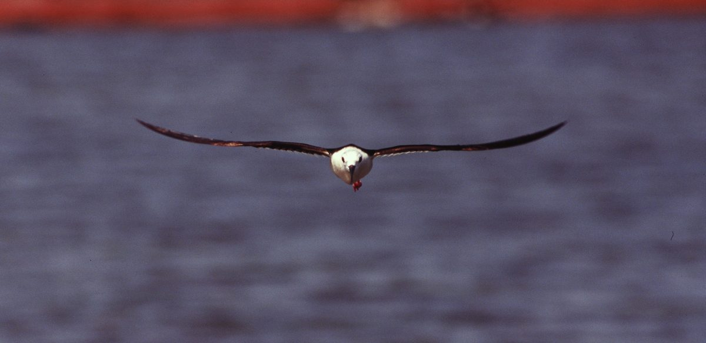
001 002
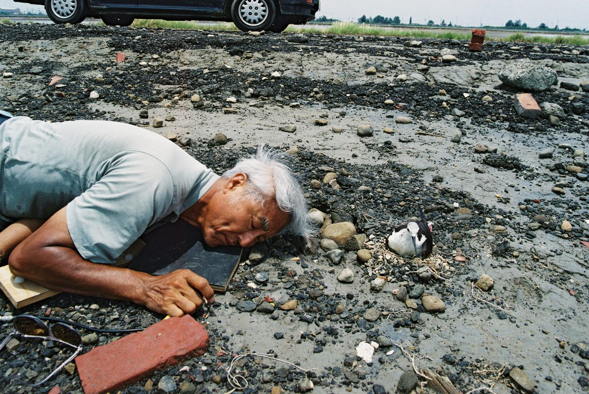
003 004
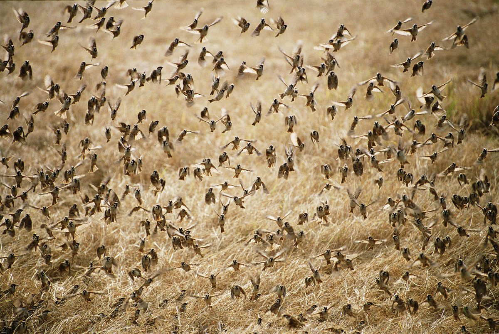
005 006
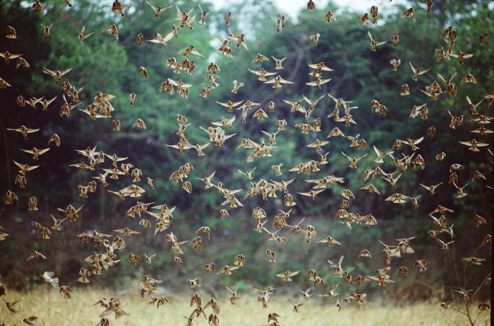
007 008
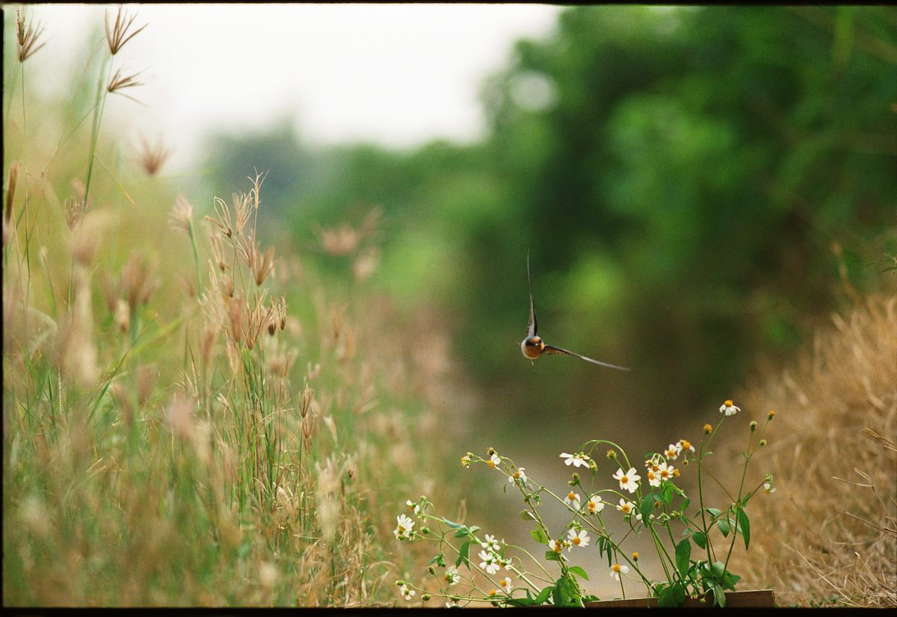
009 010
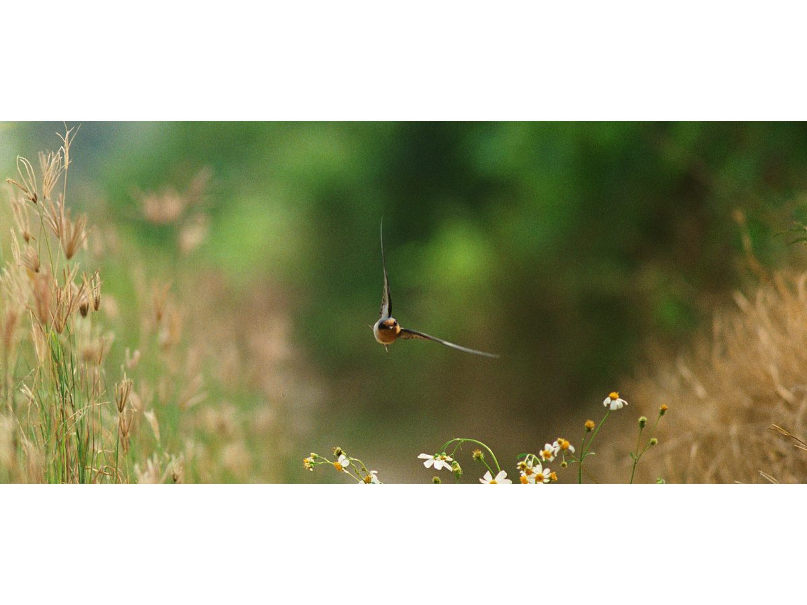
011 012
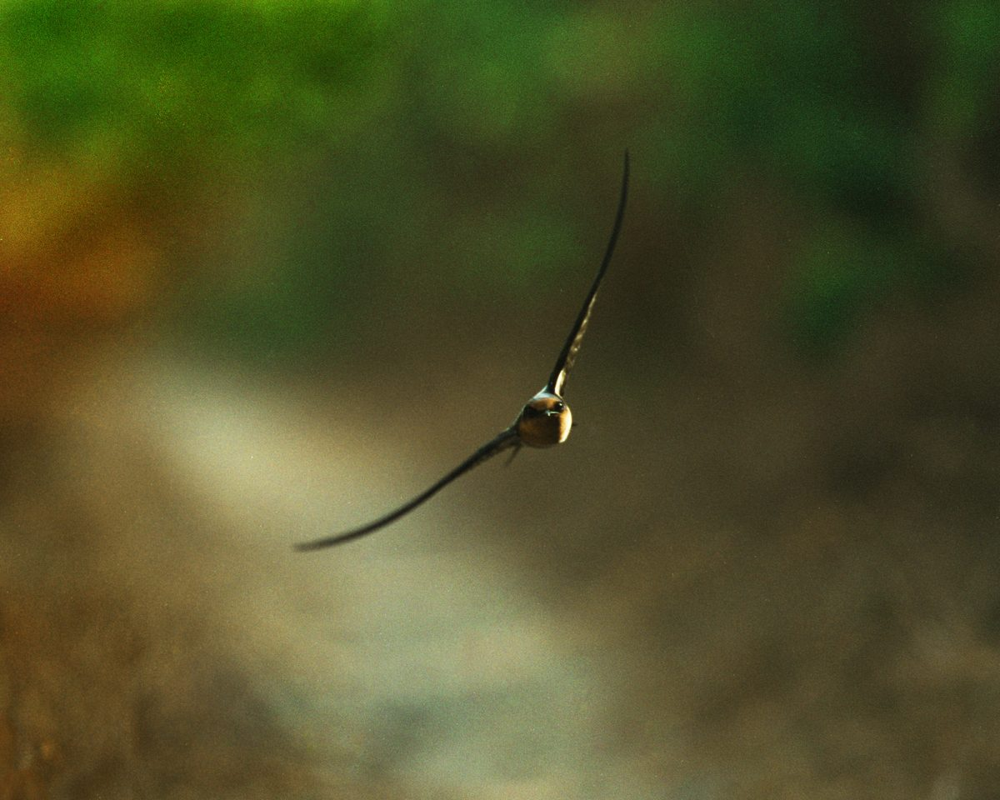
013 014
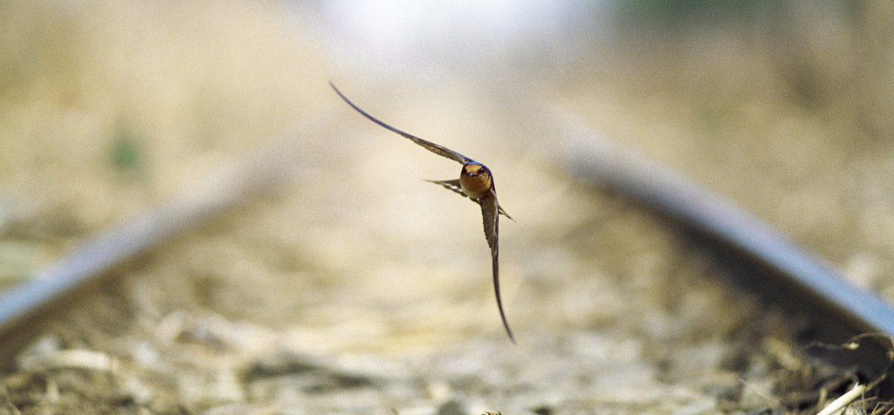
015 016
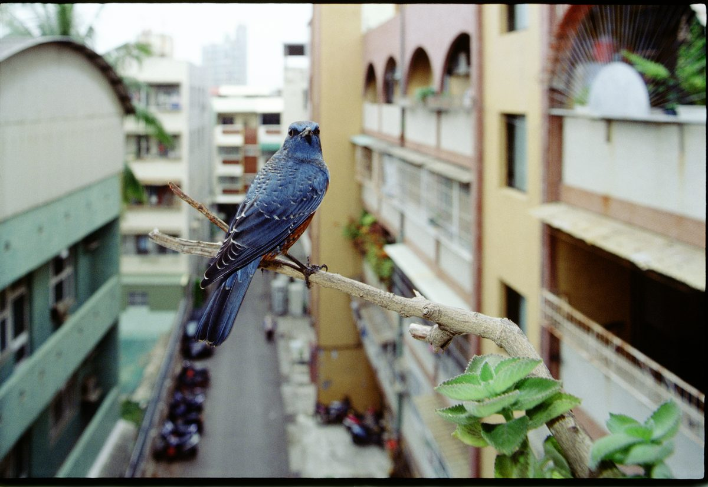
017 018
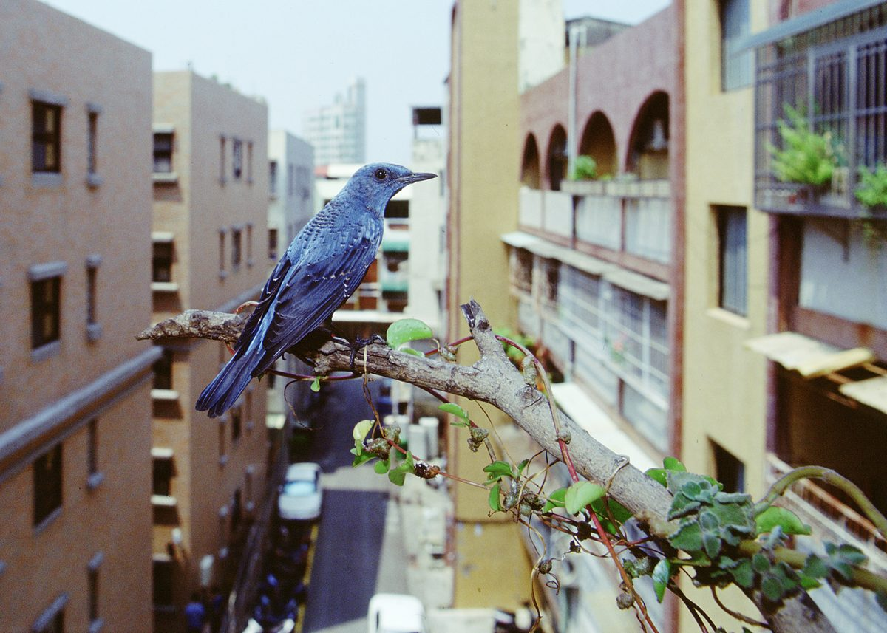
019 020
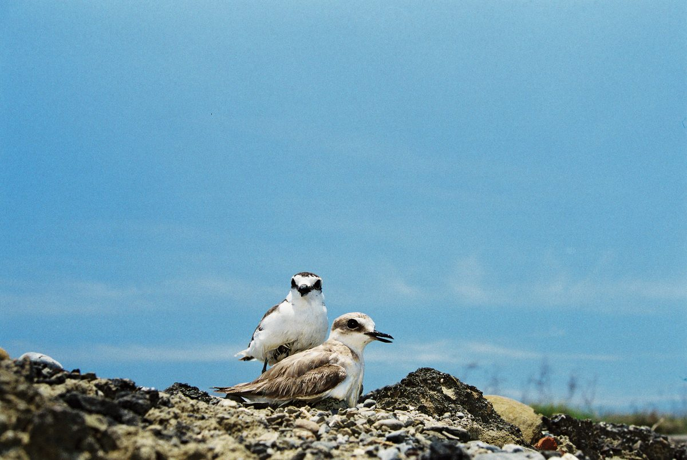
021 022